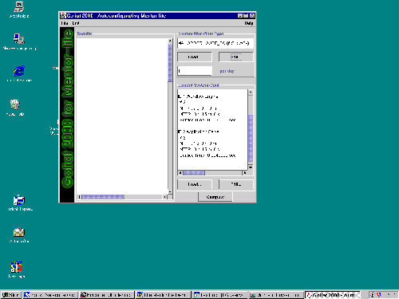
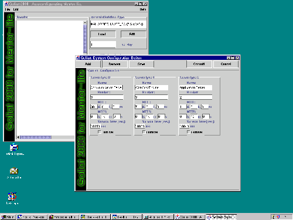
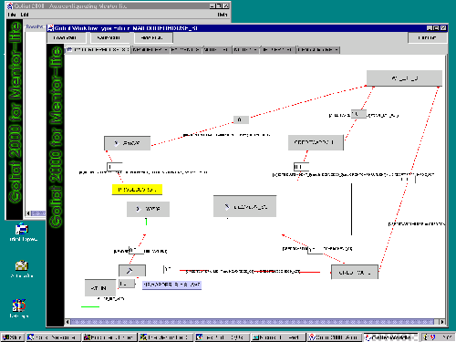
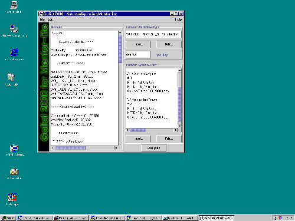

Configuration Tool
After starting the configuration tool, we get the main working window.
 |
| (click on figure to enlarge) |

On the left hand side we see the result panel. On the right hand side the user can specify a workflow type in the upper area and a system configuration in the lower area as the basic input for the calculations. The workflow type specifies the workflow specification that is loaded from the workflow repository, i.e., the statchart file. The system configuration can also be loaded from a file or edited from scratch by clicking on the "Edit" button of the system configuration section...
 |
| (click on figure to enlarge) |

... which opens the system configuration editor. Here the user can specify a new system configuration or edit a configuration she loaded via the "Load" button in the main window. The parameters that can be set for each server type are:
- The name of the server type,
- the number of replications of the server type,
- the server type's mean time to failure (MTTF),
- the server type's mean time to repair (MTTR),
- and the mean service time for a single request sent to the server.
In addition to editing the parameters of a server type, the user can remove or add new server types. So she can model a "real world" system configuration. A click on the "Save" button opens a dialog window to save the configuration for future use.
The "Commit" button transforms the input into an internal representation of the system configuration and closes the window. Now the user has to feed a workflow type into the tool by clicking on the "Load" button in the workflow type area of the main window.
 |
| (click on figure to enlarge) |

The main part of the workflow type editor shows a graphical representation of the workflow type similar to that of the monitoring tool. The states are represented by buttons and the transitions as arrows with a small circle denoting the target state of the transiton. The user can switch between the top level workflow and its subworkflows by clicking on the corresponding state button. Nested states are marked with an arrow.
The small textfields at the transitions denote the transition probabilities. These probabilities can be edited. If a state has only one outgoing transition, the probability must be 1.0 and is therefore uneditable.
Clicking on a state that does not represent a subworkflow opens a dialog in which the state parameters can be edited. These parameters are:
- The load vector, i.e., the load that this state induces on the different server types, and
- the mean residence time, which is the time that is spent in this state (i.e., the turnaround time of the corresponding activity) before entering the next state.
Edited settings can be saved for future use. Instead of editing the workflow, the user can also load a previously entered parameter setting. The full implementation of the tool will be able to extract these parameters from the log and history databases of Mentor-lite.
The "Commit" button feeds the parameters into the internal model and closes the window. Next, the user has to specify an arrival rate for instances of the current workflow type (i.e., the number of workflow instances started per day) in the main window. Now we are ready for the evaluation. This is done by clicking the compute button in the main window.
 |
| (click on figure to enlarge) |

The results of the evaluation with the given parameters as input are shown in the panel on the left hand side of the main window:
- The expected availability of the system (in percent) and its expected downtime in hours, minutes, and seconds per year.
- The mean turnaround time of the specified workflow type based on the given residence times and transition probabilities of the workflow type.
- The total load in average that is induced on the different server types in terms of the number of requests for the execution of a single workflow instance.
- The mean number of concurrently active workflows in the system based on the arrival rate.
- The maximum sustainable throughput (in terms of requests per second) that each server can process.
- The required throughput based on the given system configuration and parameter setting.
- The expected mean waiting time at each server (this is our main indicator for the "static" performance of the system, if we do not consider temporary unavailability).
- The performability [1] of the system with temporary degradation and unavailability of servers taken into account.
This is the end of the demo.
References
[1] M. Gillmann, J. Weissenfels, G. Weikum, A. Kraiss: Performance and Availability Assessment for the Configuration of Distributed Workflow Management Systems, in Proceedings of International Conference on Extending Database Technology (EDBT), Constance, Germany, 2000.